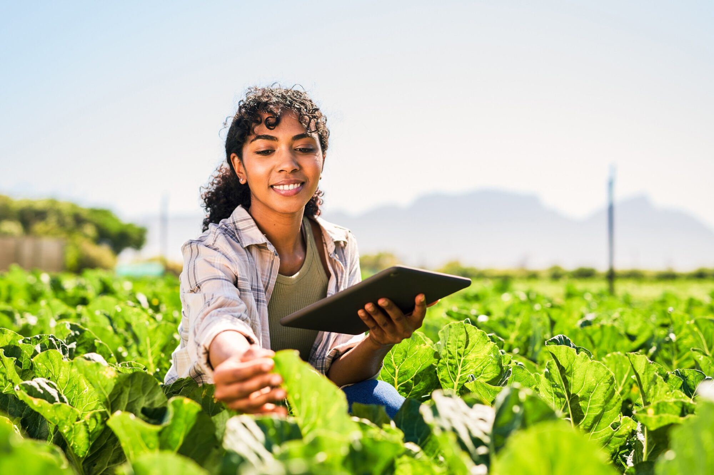

Bem-vindo ao Jornal da Agricultura!
A agricultura desempenha um papel fundamental na economia global, alimentando populações e sustentando comunidades ao redor do mundo. Este site é dedicado a trazer notícias, insights e histórias sobre o universo agrícola.
Explore nossas seções e mantenha-se atualizado com as últimas informações sobre tecnologia agrícola, práticas sustentáveis, mercados e muito mais!
O Impacto Positivo do Campo nas Cidades: Uma Conexão Vital
Data: 1º de agosto de 2024
Por: [Seu Nome]
Local: [Sua Cidade]
Na era da urbanização acelerada, a relação entre o campo e as cidades torna-se um tema cada vez mais relevante. Embora as áreas urbanas estejam em constante expansão e desenvolvimento, a influência positiva do campo sobre as cidades é inegável e multifacetada. Esta reportagem explora como a vida rural beneficia a vida urbana de maneiras surpreendentes.
Alimentos Frescos e Sustentabilidade
Uma das conexões mais evidentes entre o campo e a cidade é o fornecimento de alimentos. As regiões rurais são responsáveis pela produção da maior parte dos alimentos consumidos nas áreas urbanas. Frutas, vegetais, grãos e carnes são cultivados e criados longe do burburinho das cidades, mas chegam aos mercados urbanos garantindo uma dieta saudável e variada para milhões de pessoas.
De acordo com Maria Silva, especialista em sustentabilidade agrícola, "O transporte eficiente de alimentos do campo para a cidade não só promove uma alimentação saudável, mas também pode reduzir a pegada de carbono associada ao transporte de longa distância. Além disso, práticas agrícolas sustentáveis no campo ajudam a manter o equilíbrio ecológico e a conservar recursos naturais."

Preservação Ambiental: O Papel dos Ecossistemas Rurais
O campo também desempenha um papel crucial na preservação do meio ambiente. Áreas rurais e florestais funcionam como verdadeiros pulmões verdes, ajudando a filtrar poluentes e a manter a qualidade do ar e da água que chega às cidades. Estudos realizados pelo Instituto de Pesquisa Ambiental mostram que a preservação dessas áreas é vital para garantir que os recursos naturais urbanos permaneçam limpos e seguros para consumo.
Lazer e Qualidade de Vida
A importância do campo vai além da alimentação e da conservação ambiental. Ele oferece um espaço necessário para o lazer e a recreação. Muitas cidades têm acesso a parques rurais e áreas naturais que proporcionam um alívio da vida urbana frenética. Atividades ao ar livre, como caminhadas e passeios em trilhas, têm se mostrado eficazes na redução do estresse e na melhoria da saúde mental dos habitantes urbanos.
João Costa, residente de uma grande metrópole, compartilha sua experiência: "Ter acesso a áreas naturais próximas é fundamental para meu bem-estar. É um ótimo escape da rotina agitada da cidade e me ajuda a recarregar as energias."

Desenvolvimento Econômico e Cultural
A interação entre o campo e a cidade também estimula o desenvolvimento econômico e cultural. O turismo rural tem se mostrado uma fonte importante de receita para muitas regiões. Além disso, promove a preservação das tradições locais e fortalece a identidade cultural.
Segundo Ana Pereira, economista especializada em turismo sustentável, "O turismo rural não só gera empregos e contribui para a economia local, mas também promove a troca cultural e a valorização das práticas tradicionais. Isso cria uma rica tapeçaria de experiências que beneficia tanto os visitantes quanto os moradores."
Inovação e Tecnologia
A colaboração entre áreas urbanas e rurais também impulsiona inovações tecnológicas. Tecnologias agrícolas desenvolvidas no campo, como a jardinagem vertical e a agricultura urbana, são adaptadas e aplicadas nas cidades, promovendo práticas urbanas mais sustentáveis e eficientes.
Conclusão
A conexão entre o campo e a cidade é uma relação simbiótica que traz benefícios abrangentes para a vida urbana. Desde o fornecimento de alimentos frescos e a preservação ambiental até oportunidades de lazer e desenvolvimento econômico, a influência do campo sobre as cidades é vital e positiva. Valorizar e fortalecer essa conexão é essencial para construir um futuro mais sustentável e harmonioso para todos.